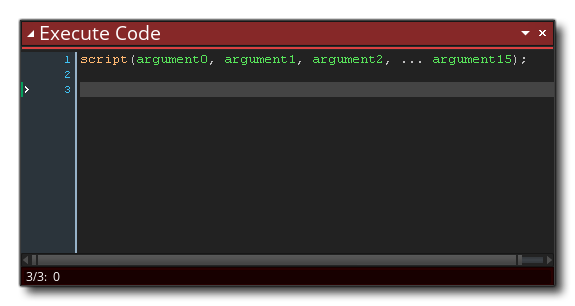
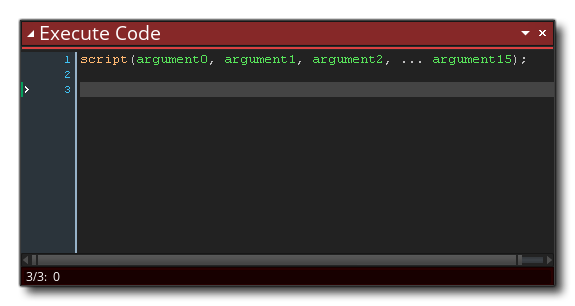

Uno de los recursos en el Árbol de recursos es el recurso Script. Los scripts son simplemente bloques de código o acciones de DnD ™ que se ejecutan como si fueran una de las funciones o acciones de GameMaker Studio 2. Tenemos una sección completa del manual sobre cómo escribir scripts usando código ( aquí ), pero también puede hacer scripts usando solo las acciones Arrastrar y soltar.
Una secuencia de comandos DnD ™ (como cualquier acción incorporada de DnD ™) puede tomar diferentes valores (o ninguno), y luego realizar una cadena de acciones y devolver un valor o no devolver nada, y lo llamaría usando la secuencia de comandos de ejecución.  acción, que se ve así:
acción, que se ve así:  Las variables de entrada se llaman argumentos, y puede suministrar hasta 4 usando esta acción (aunque puede usar todas, algunas o ninguna, dependiendo de lo que requiera para la secuencia de comandos), pero también puede usar el Código de ejecución.
Las variables de entrada se llaman argumentos, y puede suministrar hasta 4 usando esta acción (aunque puede usar todas, algunas o ninguna, dependiendo de lo que requiera para la secuencia de comandos), pero también puede usar el Código de ejecución.  para llamar al script, en cuyo caso el script puede tener hasta 16 argumentos (al usar el argument0 ... argument15 variables) o tantos argumentos como sea necesario (al usar argument[n] formación): 
para llamar al script, en cuyo caso el script puede tener hasta 16 argumentos (al usar el argument0 ... argument15 variables) o tantos argumentos como sea necesario (al usar argument[n] formación): 
Para crear un script DnD ™, simplemente use el botón derecho del mouse  en el recurso de secuencia de comandos y seleccione Crear. Esto creará una nueva secuencia de comandos DnD ™ y abrirá la ventana del editor:
en el recurso de secuencia de comandos y seleccione Crear. Esto creará una nueva secuencia de comandos DnD ™ y abrirá la ventana del editor: 
Puede nombrar el script haciendo clic con el botón derecho  en él en el árbol de recursos y seleccionando Cambiar nombre (o usando un doble clic izquierdo lento)
en él en el árbol de recursos y seleccionando Cambiar nombre (o usando un doble clic izquierdo lento)  ), pero tenga en cuenta que el nombre del script debe ajustarse a las reglas de scripting para las funciones, por lo que debe comenzar con una letra y solo contener letras, números o el símbolo "_" debajo de la barra.
), pero tenga en cuenta que el nombre del script debe ajustarse a las reglas de scripting para las funciones, por lo que debe comenzar con una letra y solo contener letras, números o el símbolo "_" debajo de la barra.
Como se mencionó anteriormente, puede pasar una serie de argumentos a un script, y los usará para realizar la tarea para la que lo ha escrito. Para entender esto mejor, tome, por ejemplo, una acción y piense cómo funciona... la coloca en un evento y especifica una serie de parámetros y hará que su instancia haga algo. Los scripts son exactamente lo mismo, con la única diferencia de que las escribe. La imagen siguiente muestra un script DnD ™ simple que toma un solo argumento y lo usa para crear varias instancias en posiciones aleatorias dentro de una sala: 
Tenga en cuenta que asignamos el valor argument0 a una variable temporal al inicio. Todos los valores que se pasan a un script tienen asignadas las siguientes variables incorporadas:
argument0, argument1, ..., etc... up to argument15
Puede acceder directamente a estas variables de argumento integradas, o puede asignarlas a variables temporales (locales) como lo hemos hecho en el ejemplo anterior (el uso de variables temporales facilita el seguimiento de cada una de ellas, y se recomienda). En el script anterior, el valor para argument0 es lo que se usará para determinar el número de veces que repeat loop se ejecutará, y llamarías al script así: 
No solo puede pasar argumentos a un script, sino que también puede pedirle a un script que devuelva un valor (utilizando el retorno).  acción), para que pueda usarlos (por ejemplo) para construir métodos de cálculo o devolver una ID de instancia después de una detección de colisión compleja o cualquier cantidad de cosas. Sin embargo, tenga en cuenta que el uso de return finaliza el script, por lo que no se ejecutarán acciones posteriores a su uso, lo que significa que debe tenerse en cuenta la forma en que se estructuran los scripts.
acción), para que pueda usarlos (por ejemplo) para construir métodos de cálculo o devolver una ID de instancia después de una detección de colisión compleja o cualquier cantidad de cosas. Sin embargo, tenga en cuenta que el uso de return finaliza el script, por lo que no se ejecutarán acciones posteriores a su uso, lo que significa que debe tenerse en cuenta la forma en que se estructuran los scripts.
A continuación se muestra un script de arrastrar y soltar que devuelve un valor: 
El script anterior simplemente verifica todas las instancias en una sala para ver cuál es su object_index es y si uno de ellos es el objeto jugador, el script volverá true (finalizando el guion) o false. Llamarás a este script así:  Entonces, llamamos al script y le pedimos que cree una variable temporal (local) para almacenar el valor devuelto (que en este caso es true o false ), y luego se verifica esta variable y se toma una acción.
Entonces, llamamos al script y le pedimos que cree una variable temporal (local) para almacenar el valor devuelto (que en este caso es true o false ), y luego se verifica esta variable y se toma una acción.
Al crear sus scripts DnD ™, puede usar todas las mismas acciones que cuando agrega acciones a un evento de objeto, e incluso puede invocar scripts desde los scripts, y de esta manera crear más código de acción "modular". Los scripts creados de esta manera pueden ahorrarle mucho tiempo creando las mismas secuencias de acción y también pueden ayudar a que sus secuencias de acción sean más fáciles de leer y más fáciles de depurar.